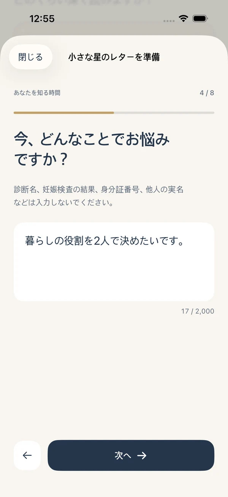
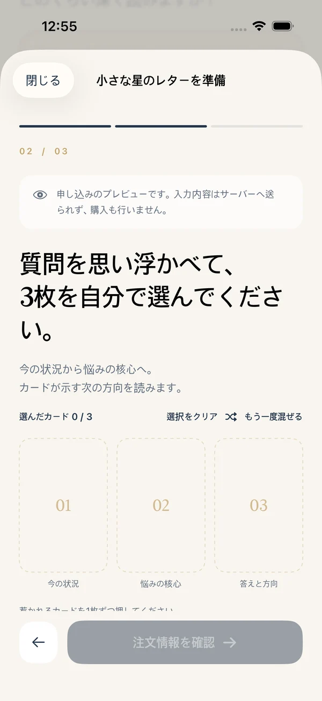
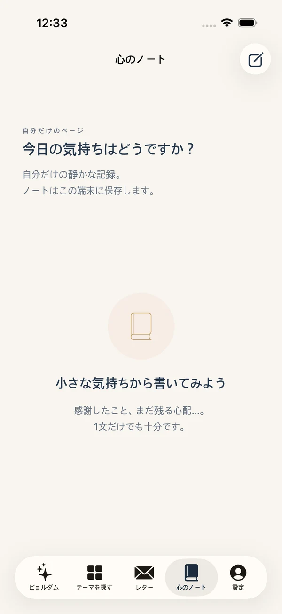

01 / LOVE
もう一度ときめきたい私
新しいつながりの前に、自分の気持ちを。
うまく言葉にできない気持ちも、そのままで。
あなたが選ぶ3枚のカードとひとつの問いが、
やさしく、わかりやすい物語になります。
App Store審査待ち · 承認後リリース予定

「それで、私はどうしたらいい？」
カードの象徴とあなたの状況を結び、まず提案を読み、
その理由や選択の基準、今できる小さな行動を考えます。
大きな分かれ道も、日々の小さな悩みも。
14カテゴリー、70テーマから
今のあなたに近い物語を見つけましょう。
新しいつながりの前に、自分の気持ちを。

仕事で疲れた心に、回復のヒントを。

進むか、残るか。自分の基準を探して。

声をかける前に、自分の心を整理。

今の自分を少し理解するひととき。

選択で大切にしたいものを見つめて。
健康状態、妊娠の結果や投資収益を予測するサービスではありません。
カードが混ざる間、今の問いを思い浮かべて。
自分で選んだ3枚から、現在の状況、悩みの核心、
答えと方向を順に考えます。
カードを押して、BYEOLDAMの雰囲気を体験してください。
3枚を一枚ずつ押して開いてみましょう。
複雑な準備なく、一歩ずつ。
注文からPDFの保存までの流れです。
今に合う物語を選び、一画面ひとつの問いに答えます。
カードを混ぜ、悩みを思い浮かべながら3枚を選びます。
アプリ内購入後に注文メールを開き、iPhone Mailで自分で送信します。
運営者の注文メール実受信後6時間以内に、制作・確認したPDFをメールで届けます。
すべての気持ちを想像するより、望む関係と確かめたいことをひとつ整理しましょう。次の選択は、その会話の後でも大丈夫です。
長い文章の中から答えを探さなくても大丈夫。
まず悩みへの提案を読み、
3枚の根拠と自分に合う行動へ進みます。
架空の状況によるSAMPLEです。実際の結果は入力とカードにより異なります。
一度にすべて答えなくても大丈夫。
入力からカード選択、記録まで、
あなたのペースでつながるアプリです。

戻っても入力した内容は保持されます。

混ぜて選び、カードを開きます。

今日の思いを心のノートに残します。
必要なときに一編ずつ。
定期購読なしで選べる2つのリーディング。
ひとつの悩みを、やさしく明確に。
アプリで選択 · 注文メール実受信後6時間以内
選択の理由と次の行動を、より深く。
アプリで選択 · 注文メール実受信後6時間以内
韓国App Storeの価格です。通貨・税金は国ごとに異なります。購入画面で最終金額をご確認ください。アプリは無料ダウンロード予定、PDFは別途アプリ内購入です。
心のノートに思いを残し、メールで届いたPDFを
手紙箱に取り込んで、自分の記録として保存。
読んで浮かんだ気持ちと小さな変化を記録します。
ファイルに保存したPDFを対応する注文へ取り込みます。
記録は端末内に保存されます。端末変更や再インストール時に自動復元されません。受信メールとPDFを別途保管してください。

アプリとPDFは韓国語・英語・日本語・簡体字中国語に対応。
注文前にアプリ設定で言語を選んでください。
現在App Store審査待ちで、正式公開前です。承認後リリース予定です。下のボタンでApp Storeの公開状況を確認できます。
いいえ。購入後に注文メールを開き、iPhone Mailで送信を押してください。送信結果と実際の受信は異なるので受付返信をご確認ください。取消・失敗時は同じ注文から追加購入なしで再送できます。
運営者の注文メール実受信後6時間以内に、制作・確認したPDFをメールで返信します。小さな星の手紙は10ページ、深い星の物語は25ページです。AIを使った手動制作で、リアルタイム相談ではありません。
カードの象徴と入力した状況をもとに行動の方向を提案します。未来の事実や他人の思考を確認するものではなく、医療・法律・投資などの専門判断に代わるものではありません。
ノート・注文・取り込んだPDFは現在の端末に保存します。自動同期や別端末への自動復元はありません。メールとPDFを別途保管し、再購入前に注文番号でお問い合わせください。
韓国語・英語・日本語・簡体字中国語に対応します。注文前に言語を選び、確認画面でPDF言語をご確認ください。後からアプリ言語を変えても既存注文のPDF言語は変わりません。
注文番号・商品名・問題発生時刻をサポートへお知らせください。Apple返金はreportaproblem.apple.comから申請し、Appleが審査・処理します。パスワードやカード番号は送らないでください。
3枚のカードと、あなたへの一通。
iPhoneでBYEOLDAMに出会いましょう。
現在審査待ちです。まだダウンロードできない場合があります。承認後の公開予定で、サービスは19歳以上の方が対象です。